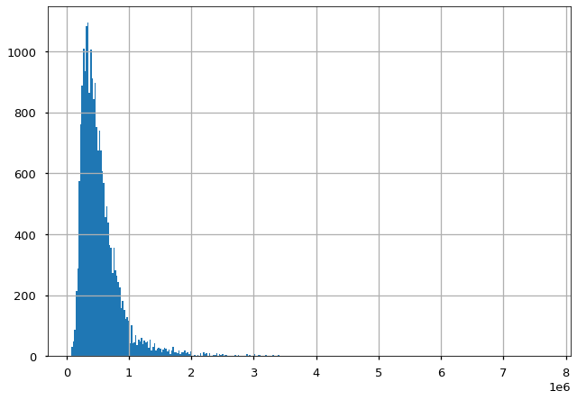

Topic 03: Control Flow, Functions, and Statistics#
online-ds-ft-022221
02/25/21
Learning Objectives#
Walk through
Python Fundamentals.ipynbWalk through the
Bento Activityas a groupDive deep into key concepts where you have questions.
Discuss some basic statistics:
measures of centrality
measures of dispersion
Questions#
What would happen to our repositories if we were to change the names or locations of folders/files manually from file explorer? How would we redefine the new locations in git?
Link: Can you please explain why the “and” statement returns the falsy value when it is evaluating two elements? I would have thought that it would return True if both values were truthy and False if one of the values were falsy.
Similar to above can you please explain why the “or” statement returns the actual values depending on the elements instead of returning True or False?
Does join() method only work on strings? It seems that if a list contain other variable types (float, int, bool) the code throws an error. Any way we can concatenate variables of different types?
What does .join do? - Nevermind, it combines an iterable into a string with the string before the .join separating them.
On while loops - is there a best practice for the order in which you write conditionals (for example, should you always put a “break” conditional statement first)?
Curious to understand why you prefer nested dictionaries as opposed to lists of dictionaries.
for loops with dictionaries
Can you talk more about the difference between population and sample calculations? I know that we need to divide by n-1 when calculating things like stddev in a sample data set versus dividing by n for a population. But I find that formulas are sometimes written with n and other times with n-1 without addressing that it is for a sample or population explicitly… is there a convention we should be aware of, such as that formulas are usually written with n and people should ASSUME n-1 is used? Are there standards for how libraries like numpy make these calculations?
Why would we use variance > SD? Is a third drawback of variance that it grows as our sample set grows? The measurement of variance in a vacuum seems arbitrary
Python Fundamentals#
Open
python_fundamentals.ipynb
Bento Box Activity/Solution#
Review Python Review Bento activity solution.
Basic Statistics#
Resources:#
## Let's get some data to work with
import pandas as pd
import matplotlib.pyplot as plt
import seaborn as sns
plt.style.use('seaborn-talk')
prices = pd.read_csv('house-prices.csv')['price']
Measures of Central Tendency#
prices.hist(bins='auto')
<AxesSubplot:>

Mean#
The Mean or Arithmetic Average is the value obtained by dividing the sum of all the data by the total number of data points as shown in the formula below:
Median#
The median is the middle value in a sorted list of values/observations
Mode#
The mode is the value that occurs the most
highest frequency
Measures of Dispersion#
Absolute Deviation#
Absolute Deviation is the simplest way of calculating the dispersion of a data set. It is calculated by taking a value from the dataset and subtracting the mean of the dataset. This helps to identify the “distance” between a given value and the mean. In other words, how much a value deviates from the mean.
\(\left|x_i - \bar{x}\right|\)
Average Absolute Deviation is calculated by taking the mean of all individual absolute deviations in a data set as shown in the formula below:
Variance#
Earlier in the course, you learned about variance (represented by \(\sigma^2\)) as a measure of dispersion for continuous random variables from its expected mean value. Let’s quickly revisit this, as variance formula plays a key role while calculating covariance and correlation measures.
The formula for calculating variance as shown below:
\(x\) represents an individual data points
\(\mu \) is the mean of the data points
\(n\) is the total number of data points
Standard Deviation#
The Standard Deviation is another measure of the spread of values within a dataset. It is simply the square root of the variance. In the above formula, \(\sigma^2\) is the variance so \(\sigma\) is the standard deviation.
Measures of Mututal Variation#
Calculating Covariance#
If you have \(X\) and \(Y\), two random variables having \(n\) elements each. You can calculate covariance (\(\sigma_{xy}\)) between these two variables by using the formula:
\(\sigma_{XY}\) = Covariance between \(X\) and \(Y\)
\(x_i\) = ith element of variable \(X\)
\(y_i\) = ith element of variable \(Y\)
\(n\) = number of data points (\(n\) must be same for \(X\) and \(Y\))
\(\mu_x\) = mean of the independent variable \(X\)
\(\mu_y\) = mean of the dependent variable \(Y\)
Interpreting covariance values#
Covariance values range from positive infinity to negative infinity.
A positive covariance indicates that two variables are positively related
A negative covariance indicates that two variables are inversely related
A covariance equal or close to 0 indicates that there is no linear relationship between two variables
Calculating Correlation Coefficient#
Pearson Correlation (\(r\)) is calculated using following formula :
So just like in the case of covariance, \(X\) and \(Y\) are two random variables having n elements each.
\(x_i\) = ith element of variable \(X\)
\(y_i\) = ith element of variable \(Y\)
\(n\) = number of data points (\(n\) must be same for \(X\) and \(Y\))
\(\mu_x\) = mean of the independent variable \(X\)
\(\mu_y\) = mean of the dependent variable \(Y\)
\(r\) = Calculated Pearson Correlation
import numpy as np
np.std()
tup = (3,4,6)
tup
(3, 4, 6)
tup[2] = 1
---------------------------------------------------------------------------
TypeError Traceback (most recent call last)
<ipython-input-3-bb6d2a2e4378> in <module>
----> 1 tup[2] = 1
TypeError: 'tuple' object does not support item assignment
lis = [3,4,6]
lis
[3, 4, 6]
lis[2] = 1
lis
[3, 4, 1]